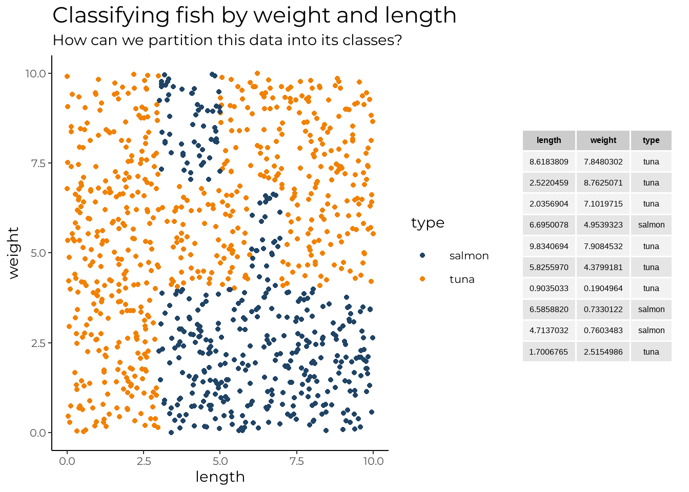
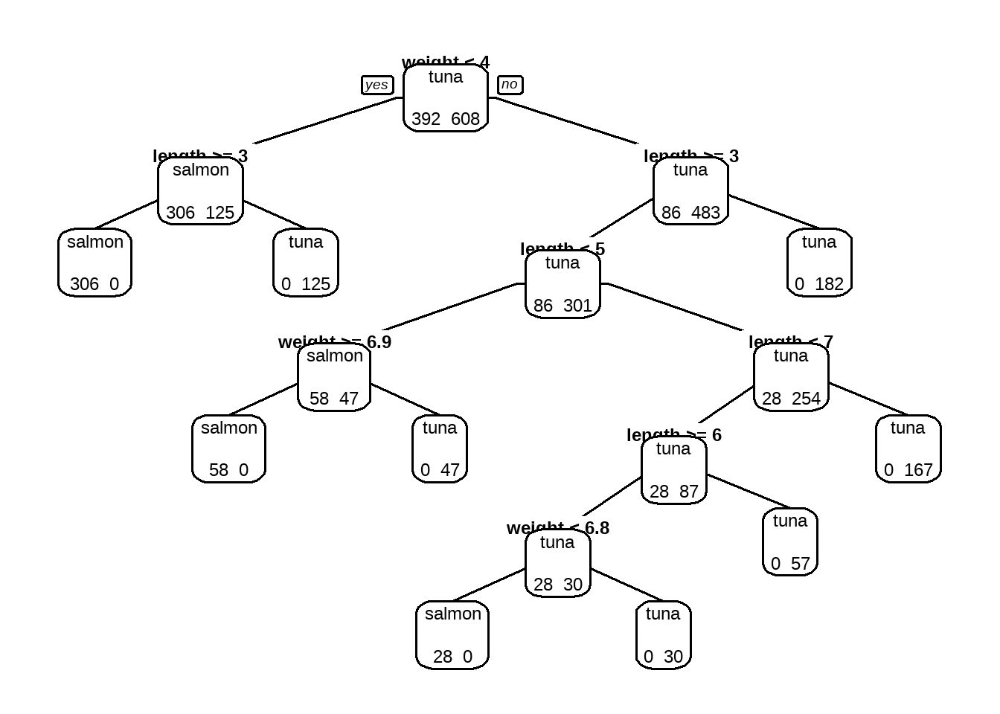
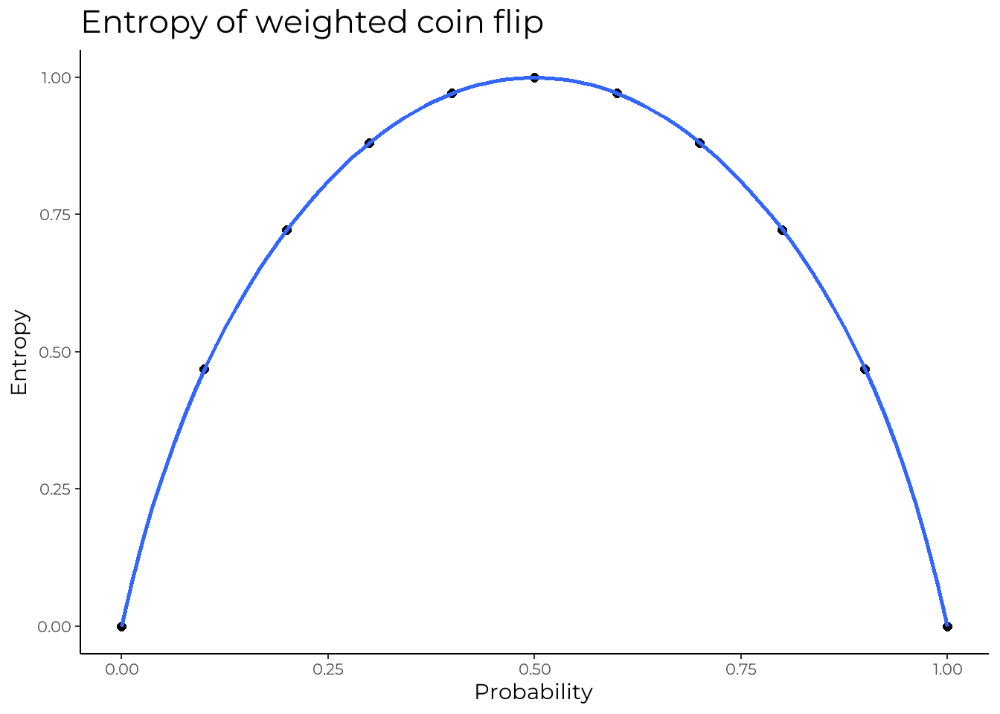
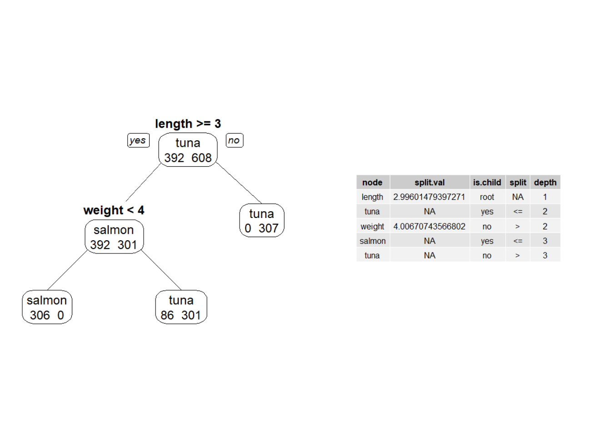

Decision tree classifier from scratch v1
datascience
R
A from scratch implementation of the decision tree classifier algorithm in R
What are decision trees?
Decision trees are a non-parametric supervised learning method. Supervised means that the input and output data is labelled. Non-parametric means that no assumptions are made regarding the assumptions of the population. This definition is obviously not that useful, but with some further consideration we can make some sense of it. Analogous to a tree in real life, a decision tree is a tree-like model of decisions. In essence, we pass this model data on several input variables, and ask it to create a tree that predicts the value of the target variable. This is all probably best understood through an example, so let’s take a look at one…
Example
In this example we consider how we can classify a fish as a salmon or tuna based off its length and weight. Looking at the below data set, it is easy to see some patterns, in how each type of fish is grouped based off its two characteristics. For instance, any fish with a length less than around 2.5 is a tuna. Continuing on, a fish with length greater than 2.5, and weight less than around 4 is a salmon. We could also say that a fish with length greater than 7.2 and weight greater than 4.1 is a tuna. You are probably getting the gist of it at this point…
If we take all of these splits, or otherwise decisions and organised them, it would look something like this
n= 1000
node), split, n, loss, yval, (yprob)
* denotes terminal node
1) root 1000 392 tuna (0.3920000 0.6080000)
2) length>=2.996015 693 301 salmon (0.5656566 0.4343434)
4) weight< 4.006707 306 0 salmon (1.0000000 0.0000000) *
5) weight>=4.006707 387 86 tuna (0.2222222 0.7777778)
10) length< 6.978225 220 86 tuna (0.3909091 0.6090909)
20) length< 3.398175 19 2 salmon (0.8947368 0.1052632) *
21) length>=3.398175 201 69 tuna (0.3432836 0.6567164)
42) length< 4.998481 86 41 tuna (0.4767442 0.5232558)
84) weight>=6.948427 41 0 salmon (1.0000000 0.0000000) *
85) weight< 6.948427 45 0 tuna (0.0000000 1.0000000) *
43) length>=4.998481 115 28 tuna (0.2434783 0.7565217)
86) length>=6.017146 58 28 tuna (0.4827586 0.5172414)
172) weight< 6.832503 28 0 salmon (1.0000000 0.0000000) *
173) weight>=6.832503 30 0 tuna (0.0000000 1.0000000) *
87) length< 6.017146 57 0 tuna (0.0000000 1.0000000) *
11) length>=6.978225 167 0 tuna (0.0000000 1.0000000) *
3) length< 2.996015 307 0 tuna (0.0000000 1.0000000) *
And voila, we have our tree! From referring to the diagram above, we can see that the decision tree has created splits across our input variables (weight and length) such that our scatterplot becomes partitioned into rectangular regions containing each type of the fish (the target variable). This is exactly what the decision tree classifier does. Some of you may be asking why this is useful? Well suppose we have a noob fisherman in the Atlantic ocean (which only contains salmon and tuna for our purposes) who has just caught his first fish, but is unsure of what fish it is. Taking the decision tree just produced, this noob fisherman could then identify what fish he has caught. Well this is not exactly the most realistic scenario, but you get the idea hopefully. So now that we know what the algorithm does, lets take a look at some terms that are often thrown around when talking about decisions tree’s.
Describing a tree
It would good if we could have some terminology to describe the different parts of a tree…
- Root Node: The input data set or population used to create the decision tree is the root node. It is always the tp most node in a decision tree from which the data set it split into different subsets
- Decision node: Sub-nodes that are split into further sub-nodes. The decision nodes, as the name suggests, are the nodes which split our data set into subsets. From our example before, the \(\text{length} \geq 3\)` or \(\text{length }<7\) are two of the many decision nodes
- Parent and child node: A node which is divided sub-nodes is the parent node of the sub-nodes, whereas the sub-nodes are the children of the given parent node. The \(\text{weight} < 6.8\) is the parent node of the terminal nodes below it.
- Leaf/terminal node: Nodes that do not get split any further
- Pure node: A node at which points classified all belong to a single class. For our tree, all the terminal nodes are also pure nodes
- Branch/sub-tree: A subsection of the entire tree is called branch or sub-tree
Measures of uncertainty
We saw earlier that the purpose of a decision tree is to partition the data into regions of a certain class (or try its best to do so). There were many choices for the split among our two input variables, but one may naturally ask which of these splits are the best, and in which order should we carry them out, such that the resultant data is partitioned as good as possible. Now as it turns out, this question relates the notion of uncertainty. The best split will be the one that minimizes the uncertainty of the child nodes. More specifically, we seek to achieve the maximum level of homogeneity (sameness) in the target variable, such that the total uncertainty of the child nodes are less than the parent node.
Entropy
Entropy quantifies the amount of uncertainty involved in the outcome of a process. It has formula
\[\begin{align*} \mbox{Entropy} &= \sum_{c}{f_{c} \cdot I(c)} \end{align*}\]
where \(f_{c}\) is the fraction of a class in data set and \(I(c)\) is the information content in the class. Also \(c\) is the total number of classes. In the context of decision tree classifiers, \(I(c) = -\log_{2}{(f_{c})}\) which gives
\[\begin{align*} \mbox{Entropy} &= -\sum_{c}{f_{c} \cdot \log_{2}{(f_{c})}} & \\ \end{align*}\]
The choice of the \(\text{log}\) function is beyond the scope of this article, but those interested may wish to take a look at this article. Implementing an entropy function can be done as shown below
get_entropy <- function(x){
#Assume x is factor of labels
if(length(x) == 0) return(0)
weights = table(x)/length(x)
info_content = -weights*log2(weights)
entropy = sum(info_content)
return(entropy)
}We can perform a few checks using our function to check that it performs as expected
#Entropy is zero?
get_entropy(c(0,0,0,0,0))
## [1] 0
#Entropy is one?
get_entropy(c(0,0,0,1,1,1))
## [1] 1
#Entropy is non-zero?
get_entropy(salmon_fish$type)
## [1] 0.9660781If we only have one class then our data is homogeneous, which means there is no uncertainty regarding the data. If we have an equal number of observations across two classes, then uncertainty is at its maximum. Note that a lower value of entropy always means less uncertainty. A simple situation which may help one understand how entropy works is the flipping of a coin

For the coin flip (two classes), entropy is constrained between zero and one. A fair coin has the most uncertainty, whereas a coin with some bias towards one side has less uncertainty. This intuitively makes sense.
Gini impurity
Gini impurity is one of the other available measures for calculating uncertainty. While entropy does not have an intuitive interpretation of its formula, we can say that gini impurity calculates the amount of probability of a specific feature that is classified incorrectly when selected randomly precisely. It has formula
\[\begin{align*} \mbox{Gini index} &= 1 - \sum_{i=1}^{n}{(p_{i})^2} \end{align*}\]
where \(p_{i}\) is the probability of an element being classified for a distinct class. This can also be easily implemented
get_gini_impurity <- function(x){
#Assume x is a factor with labels
if(length(x) == 0) return(0)
weights = table(x)/length(x)
weights_squared = weights^2
sum_of_squares = sum(weights_squared)
gini = 1 - sum_of_squares
return(gini)
}As with entropy, we can also perform some checks
#Minimum uncertainty is 0
get_gini_impurity(c(0,0,0,0,0))
## [1] 0
#Maximum uncertainty is 0.5 for two classes
get_gini_impurity(c(0,0,1,1))
## [1] 0.5
#Between 0.5 and 1?
get_gini_impurity(c(1,1,2,2,3,3,4,4))
## [1] 0.75Gini impurity in the case of two classes is constrained between zero and half, with zero being minimum uncertainty and half being maximum uncertainty. However with more than two classes, the measure will always be in between zero and one. This is in contrast to entropy which has no upper bound. Once again, note that higher values of gini impurity represent greater uncertainty and vice versa.
Information gain
Information gain serves an extension to the calculation of entropy. It is the difference in entropy between a parent node and the average entropy of its children.
\[\begin{align*} \overbrace{\mbox{IG}(T,a)}^{\mbox{information gain}} &= \overbrace{H(T)}^{\mbox{entropy of parent}} - \overbrace{H(T|a)}^{\mbox{average entropy of children}} & \\ \end{align*}\]
While we seek to minimize entropy, we alternatively seek to maximize information gain. Or in other words, we seek to find the split with the most information gain.
get_information_gain <- function(parent, l_child, r_child, mode = "entropy"){
#Get weights in each child
l_child = as.data.frame(l_child)
r_child = as.data.frame(r_child)
weight_l = nrow(l_child)/nrow(parent)
weight_r = nrow(r_child)/nrow(parent)
#Choose mode
if(mode == "gini"){
gain = get_gini_impurity(parent[, ncol(parent)]) - (weight_l*get_gini_impurity(l_child[, ncol(l_child)]) + weight_r*get_gini_impurity(r_child[, ncol(r_child)]))
} else {
gain = get_entropy(as.character(parent[, ncol(parent)])) - (weight_l*get_entropy(as.character(l_child[, ncol(l_child)])) + weight_r*get_entropy(as.character(r_child[, ncol(r_child)])))
}
}Stopping conditions
Now that we know how to find the best split (the one that reduces the most uncertainty) and that decision trees essentially recursively split the data into regions, it is important to consider the stopping conditions. This is primarily due to the fact that the CART (Classification and Regression Trees) algorithms are greedy. What I mean by them being ‘greedy’ is that they will keep splitting the data in an effort to reduce entropy unless told otherwise. This produces a ‘locally optimal solution’ rather than a ‘globally optimal solution’; in simpler terms, we could say that a decision tree never reconsiders its choices, and only makes whatever choice seems best at the moment. While we can not necessarily prevent the ‘live in the moment’ behavior of the decision tree, it is important to stop the decision tree from partitioning our data infinitely. A solution in which we do not restrain the algorithm will be computationally expensive, difficult to interpret and probably be overfitted to the data.
- Minimum sample for a new node: Some implementations of CART algorithms such as the one in
rpartoften require at least 5 observations to create a new node - Minimum amount of information gain or entropy: We could also tell the decision tree that is not able to create a new node unless the entropy for that split meets a threshold value
- Minimum depth of node: A pre-specified limit for the depth will stop the algorithm from making too many splits
Helper functions
Before we begin creating our helper function for the decision tree classifier, it important to define what form the input data will be in for our algorithm. We will use the following form
\[\begin{bmatrix} x_{1} & x_{2} & x_{3} & x_{4} & \dots & x_{k} & Y \end{bmatrix}\]where \(x_{1}, x_{2}, x_{3}, ... , x_{k}\) are the k features (variables) we will use to train our model and where \(Y\) is the target variable (the labels)
Train-test split
We will first code function to split our data into a training data set, which will be used to train the decision tree, and then a testing data set, which will be used to test how well the decision tree performs. Note that this function is not a helper that will be called by the main algorithm, but I could not find a better section to put this under.
get_train_test <- function(df, train_size){
observations = 1:nrow(df)
#Option for a proportion or number
if(train_size < 1){
test_size_f = round(train_size*nrow(df))
} else {
test_size_f = train_size
}
#Get index of train values
train_index = sample(observations, size = test_size_f)
test_observations = nrow(df) - length(train_index)
#Get index of test values
test_index = double(length = length(observations))
for(i in 1:length(observations)){
if(any(observations[i] == train_index)){
next(i)
} else {
test_index[i] = observations[i]
}
}
test_index_f = c(subset(test_index, test_index > 0))
#Create df's from index values
train_df = df[train_index, ]
test_df = df[test_index_f, ]
return(list(train_df, test_df))
}Checking the purity
This helper will be used to check whether a subset of the original data is pure. As discussed before, a pure node is a point at which the subset of the original data contains only one class. If we find that the data is pure, we would not want to continue splitting the data, as entropy would be zero at that point. In other words, we would have full certainty over the class of the points in that node.
check_purity <- function(data){
#Get unique labels
labels = length(unique(pull(data[, -1])))
#Check if there is only one
ifelse(labels == 1, return(TRUE), return(FALSE))
}Classification
After we have decided to stop creating new split at some point of our tree, most likely when a stopping condition is reached, we need to return a classification for the points in whichever subset of the original data we have at the node. If the data is pure, then our choice of what classification to make is rather simple. If the data is not pure, we will use the class that appears the most among the data points.
classify_data <- function(data){
#Get labels
get_labels = pull(data[, -1])
#Get label frequency and max
label_freq = table(get_labels)
label_freq_a = as.data.frame(label_freq)
label_dom = max(label_freq)
#Get classification
for(i in 1:nrow(label_freq_a)){
if(label_freq_a$Freq[i] == label_dom){
classification = as.character(label_freq_a$get_labels[i])
} else {
next(i)
}
}
return(classification)
}Splitting the data
I am going to, un-intuitively, make the helper that will split the data before making the helper for the potential splits. Once we have a potential split value for a given feature we need to separate the parent node into two children. Anything above the value (\(>\)) will be coined as the right node, and anything below the value (\(\leq\)) will be termed the left node. These two nodes, together, are the children of the parent node.
split_data <- function(data, split_column, split_value){
split_c = data[[split_column]]
#Filter the data into above and below
data_below = data[split_c <= split_value, ]
data_above = data[split_c > split_value, ]
return(list(data_above, data_below))
}Potential and best splits
The potential split helper(s) are arguably the most important helper. These helpers, as the name suggests, will search our data for the split that provides the most certainty regarding the classes of the child nodes. It will return a feature, and a value for that feature for which we must split. First and foremost, we need to consider the manner in which we will search our data. There are several ways to approach the search stage. One such way is to increment through the range of a feature by a learning rate; at each of these increment, we will calculate the entropy of a split made at that point. The effectiveness of this approach is largely determined by the learning rate. A very small learning rate will take a long time iterate through the data, but will be more accurate. The converse is also true for a large learning rate. Another approach would be to only have potential splits be made on each real value a feature has. The middle ground between these approaches is to check for a potential splits in the middle of two values for a given features. I will use the third approach as it is the easiest to implement
get_potential_splits <- function(data){
#Sorting stage
data = data
col_n = ncol(data) - 1
for(i in 1:col_n){
data_i = sort(data[, i])
data[, i] = data_i
}
#Creating the splits
dat = data[0, ]
for(j in 1:col_n){
for(i in 2:nrow(data)){
curr_val = data[i, j]
previous_val = data[(i-1), j]
potential_val = (curr_val + previous_val)/2
dat[(i-1), j] = potential_val
}
}
dat[nrow(dat)+1, ] = data[nrow(data), ]
dat = dat[, 1:col_n]
potential_splits = as.data.frame(dat)
if(ncol(potential_splits) == 1){
colnames(potential_splits)[[1]] = colnames(data)[[1]]
}
return(potential_splits)
}calculate_overall_entropy <- function(data_below, data_above){
#Proportion of samples in left and right children
n = nrow(data_below) + nrow(data_above)
p_data_below = nrow(data_below)/n
p_data_above = nrow(data_above)/n
#Calculate overall entropy
overall_entropy =
((p_data_below*get_entropy(as.character(pull(data_below[, -1]))))
+ (p_data_above*get_entropy(as.character(pull(data_above[, -1])))))
return(overall_entropy)
}determine_best_split <- function(data, potential_splits){
#Initialize overall entropy and col
running_entropy = 9999
best_split_value = 0
best_split_column = ""
#Find best entropy over potential splits
for(j in 1:ncol(potential_splits)){
for(i in unique(potential_splits[, j])){
mask_val = i
mask_col = j
splits =
split_data(data = data, split_column = mask_col, split_value = mask_val)
relative_entropy =
calculate_overall_entropy(data_above = splits[[1]],
data_below = splits[[2]])
if(relative_entropy < running_entropy){
running_entropy = relative_entropy
best_split_value = mask_val
best_split_column = colnames(potential_splits)[j]
} else {
next(i)
}
}
}
return(list(best_split_column, best_split_value))
}determine_best_split <- function(data, potential_splits, mode = "gini"){
#Initialize overall entropy and col
running_gain = -Inf
best_split_value = 0
best_split_column = ""
#Find best entropy over potential splits
for(j in 1:ncol(potential_splits)){
for(i in unique(potential_splits[, j])){
mask_val = i
mask_col = j
splits =
split_data(data = data, split_column = mask_col, split_value = mask_val)
relative_gain =
get_information_gain(parent = data, r_child = splits[[1]],
l_child = splits[[2]], mode = mode)
if(relative_gain > running_gain){
running_gain = relative_gain
best_split_value = mask_val
best_split_column = colnames(potential_splits)[j]
} else {
next(i)
}
}
}
return(list(best_split_column, best_split_value))
}
#might need to come back in future and add as.character() to gini as wellThe main algorithm
Recursive function
The main algorithm is a recursive function that calls the helpers to split the data, given that the stopping conditions have not been violated. In the below function, the stopping conditions are first checked. There are three conditions implemented. Namely, whether the data is fully pure, whether there is enough data points to create a new splitting node, and whether the maximum depth of the tree has been reached. The function then uses the helpers that were created earlier to recursively split the data, generating a ‘yes’ and ‘no’ answer. It prints all of this information as it does it; more nuanced code would likely build and print the tree in this same function, but I was unable to build the necessary code to do so
decision_tree_algorithm <- function(df,
counter = 1,
min_samples,
max_depth, is.child = "root"){
data = df
#Check whether stopping conditions have been violated
if(any(check_purity(data),
nrow(data) < min_samples,
(counter - 1) == max_depth)){
classification = classify_data(data)
return(print(paste(classification, is.child, counter)))
} else {
#Recursive part
#Helper functions
potential_splits = get_potential_splits(data)
split_g = determine_best_split(data, potential_splits)
split_column = split_g[[1]]
split_value = split_g[[2]]
data_g = split_data(data, split_column, split_value)
data_above = data_g[[1]]
data_below = data_g[[2]]
print(paste(split_column, split_value, is.child, counter))
#Find the answers
yes_answer =
decision_tree_algorithm(df = data_below,
counter = counter + 1,
min_samples, max_depth, is.child = "yes <=")
no_answer =
decision_tree_algorithm(df = data_above,
counter = counter + 1,
min_samples, max_depth, is.child = "no >")
}
}So the main algorithm yields the following output on the salmon-fish data…
decision_tree_algorithm(df = salmon_fish, min_samples = 1, max_depth = 3)[1] "length 2.99601479397271 root 1"
[1] "tuna yes <= 2"
[1] "weight 4.00670743566802 no > 2"
[1] "salmon yes <= 3"
[1] "length 6.97822538046186 no > 3"
[1] "tuna yes <= 4"
[1] "tuna no > 4"Now this is obviously not what a decision tree looks like (as was shown earlier). But it is a step in the right direction. There are all the essential components of a decision tree in the jumble of output, but it requires sorting to be more comprehensible.
Organising function
This function calls the decision tree recursive algorithm, captures the output and re-formats in into a data frame. An efficient implementation will likely not need this function, but since I was unable to fully incorporate the whole process in the recursive function, here we are.
decision_tree <- function(df, min_samples, max_depth){
#Store decisions and reformat
decisions =
capture.output(decision_tree_algorithm(df = df,
min_samples = min_samples,
max_depth = max_depth), append = F)
decisions_df = strsplit(decisions, " ")
decisions_cl = sapply(decisions_df, function(x) gsub("\"", "", x))
#Make list of equal length
for(i in 1:length(decisions_cl)){
if(length(decisions_cl[[i]]) != 6){
if(i == 1){
decisions_cl[[i]] = append(decisions_cl[[i]], NA, after = 4)
} else {
decisions_cl[[i]] = append(decisions_cl[[i]], NA, after = 2)
}} else { next(i) }}
#Convert to df and reformat again
decisions_df = as.data.frame(decisions_cl)
decisions_t = as.data.frame(t(decisions_df))
decisions_x = decisions_t[, -1]
row.names(decisions_x) = 1:nrow(decisions_x)
colnames(decisions_x) = c("node", "split.val", "is.child", "split", "depth")
#Sort the df
decisions_x = decisions_x[order(decisions_x$depth), ]
return(decisions_x)
}The organising function returns output that looks like this
salmon_df = decision_tree(df = salmon_fish, min_samples = 1, max_depth = 2)
This is just what we got from the recursive function, but re-organised into a data frame format. Once again this is not in the tree format, but a rather a tabular view of each node in the tree. However if we compare our data frame on the right above to a decision tree created using rpart, it is clear that they are essentially the same. Ideally I would have wanted to somehow take the data frame that is returned from the organising function, and somehow printed it out in a tree format in the console. But that is a piece of the puzzle that I am yet to solve for now.
Remarks
If it isn’t already clear, you might have noticed that this implementations leaves a lot to be desired. For instance, the tree created by the functions I have made are not in a tree format, but rather a rectangular format. Below, I have highlighted some issues or deficiencies in what I have shown above
Converting data frame tree output into a binary tree that can be printed to the console
Post pruning; sometimes a split may not necessarily be useful. Removing branches from the tree after building it can greatly increase its comprehensibility
A classification function. The whole point of the decision tree was to enable the classification of a point that is not in our data set. This function would convert the tree into a series of ifelse statements which can be traversed to classify a point
Regression. So far, I have completely omitted the discussion of decision tree regression. A decision tree regressor can be used to predict a value
Option to minimise over different metrics. Gini-impurity, information gain and entropy are all different metrics. Minimising over these metrics does not produce the same tree everytime
Categorical data. I only made an implementation that works on numerical data. As it turns out splits can also be made over categorical data.
An OOP implementation. The more and more I think about it, OOP might be better suited to implementing this algorithm; robustness and efficiency.
One last thing. While I did not make a fully functional or robust solution by any means, this implementation did heighten my knowledge of decision trees. No implementation by a single user is likely to be better than existing libraries. But then again no one attempts to solve this kind of problem with that intention. Understanding and a nice coding challenge. That is where the real value in attempting this problem lies.